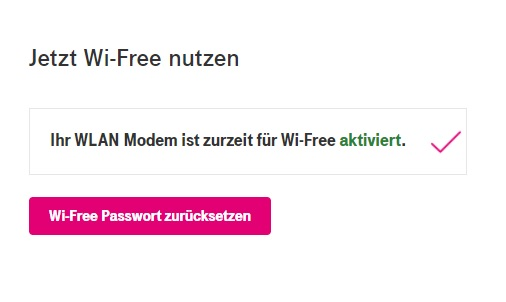

Warum Wi-Free mit Android 11 nicht (mehr) funktioniert
Atrox
PROBLEM
Android 11 Geräte mit dem Android 11 QPR1 security update vom Dezember 2020, können sich nicht mehr in zertifikatslose WPA2/3-Enterprise Netze einbuchen. Diese Option wurde aus WPA3 (und jetzt Android) entfernt, weil es möglich ist, fake-Netze zu errichten welche die Logindaten abgreifen. (Das ist bei Wi-Free nicht so tragisch, weil es ein unabhängiges Passwort sein sollte.)
Betroffen sind (Stand Jänner/Februar ) primär Google Geräte der Pixel-Serie mit Android 11, aber es ist zu erwarten dass andere Hersteller das Update ebenfalls übernehmen. Zu erkennen ist diese Änderung daran, dass die Zertifikatsprüfung im Drop-Down "Zertifikate" nicht mehr ausgeschaltet werden kann, und daher immer ein "Domain"-Feld zu befüllen ist. Gelichzeitig kommt ein Drop-Down zur "online Zertifikatsprüfung" hinzu, aber lokal wird das Zertifikat immer geprüft.
UPC / Magenta Wi-Free wird in genau diesem Modus ohne Zertifikate betrieben.
LÖSUNG
(für Magenta)
Magenta muss auf ein zertifikatsbasiertes Wi-Free umstellen (nur zur Netzauthentifikation, nicht unbedingt für jeden einzelnen User). Die Einrichtung (bzw Import) von Zertifikaten ist je nach Betriebsystem etwas unübersichtlich. Sollte Magenta also keines der Standard-Zertifikate verwenden wollen, empfielt sich eine App (von Magenta) welche die Einstellungen vornehmen kann.
Falls ein Dual-Betrieb (mit und ohne Zertifikatsüberprüfung) einrichtbar ist (oder schon wurde), muss Magenta die neuen Einstellungen veröffentlichen.
[Je nach Architektur, muss so eine Umstellung grenzüberschreitend koordiniert werden).
LÖSUNG
(für den Endkunden)
Sind mir keine bekannt.
Atrox
@admin
Bitte um Weiterleitung an die zuständigen Personen für Wi-Free. Das wird (immer) mehr Personen betreffen.
IT-Freak
Oh, das wird spannend. Das hat Apple und Windows besser gelöst, da kann man Zertifikate anlernen. Es wird jetzt auch schon ein Zertifikat im Einsatz sein, sonst würde es grundsätzlich nicht gehen.
(Mist, ich muss mir dann bei meinem WLAN auch was überlegen)
IT-Freak
P.S. vermutlich wird freeradius eingesetzt, da ist es eigentlich ohne Probleme möglich ein eigenes Zertifikat zu setzen. Es ist halt je nach dem aufwendig, weil je nach Zertifikatquelle es unter Umständen öfters getauscht werden muss, wie ein selbst signiertes.
NTM
Ich verwende Wi-Free nicht, aber es könnte mit der
Internet Fiber App
funktionieren.
Mit der App soll man sich auch mit Wi-Free Hotspots verbinden können.
Rexalius2000
Hat man eigentlich mit Wi-Free Performance Probleme wenn sich ein fremder User mit dem Modem verbindet?
IT-Freak
Es ist abhängig davon ob das WLAN oder das Coax Netz überlastet ist, aber eher nicht.
Atrox
vor 6 Stunden schrieb NTM:
Ich verwende Wi-Free nicht, aber es könnte mit der
Internet Fiber App
funktionieren.
Mit der App soll man sich auch mit Wi-Free Hotspots verbinden können.
Kann die App jemand mit einem Pixel ausprobieren? Ich kann sie nicht installieren.
Nachdem ich die Android App (wegen irgendwelcher Einstellungen von Magenta) nicht installieren darf, habe ich das APK (at.upc.connect.android.release) downgeloadet und direkt installiert. Leider erzeugt die App wieder zertifikatslose Netzeinträge - bzw sie versucht es, und scheitert daran: "
java.lang.IllegalArgumentException: Enterprise configuration is insecure
".
Anbei der relevante Teil aus dem Logcat:
Zitat
02-14 01:25:16.023 16979 17177 D offload-agent: g::generateEAPWifiEnterprise Generating wifi configuration for EAP TTLS MSCHAPV2.
02-14 01:25:16.023 16979 17177 D offload-agent: g::generateEAPWifiEnterprise Returning updated configuration for EAP TTLS MSCHAPV2.
02-14 01:25:16.023 16979 17177 E offload-agent: com.openet.offload.agent.d.b::callEvaluation AskEvaluationTask failed
02-14 01:25:16.023 16979 17177 E offload-agent: java.lang.IllegalArgumentException: Enterprise configuration is insecure
02-14 01:25:16.023 16979 17177 E offload-agent: at android.net.wifi.WifiNetworkSuggestion$Builder.setWpa2EnterpriseConfig(WifiNetworkSuggestion.java:271)
02-14 01:25:16.023 16979 17177 E offload-agent: at com.openet.offload.agent.network.configuration.a.b(SourceFile:8)
02-14 01:25:16.023 16979 17177 E offload-agent: at com.openet.offload.agent.network.configuration.a.a(SourceFile:67)
02-14 01:25:16.023 16979 17177 E offload-agent: at com.openet.offload.agent.evaluation.a.a(SourceFile:58)
02-14 01:25:16.023 16979 17177 E offload-agent: at com.openet.offload.agent.evaluation.a.a(SourceFile:21)
02-14 01:25:16.023 16979 17177 E offload-agent: at com.openet.offload.agent.evaluation.RulesEvaluator.evaluate(SourceFile:16)
02-14 01:25:16.023 16979 17177 E offload-agent: at com.openet.offload.agent.d.b.a(SourceFile:11)
02-14 01:25:16.023 16979 17177 E offload-agent: at com.openet.offload.agent.d.b.a(SourceFile:2)
02-14 01:25:16.023 16979 17177 E offload-agent: at com.openet.offload.agent.d.b.doInBackground(SourceFile:1)
02-14 01:25:16.023 16979 17177 E offload-agent: at android.os.AsyncTask$3.call(AsyncTask.java:394)
02-14 01:25:16.023 16979 17177 E offload-agent: at java.util.concurrent.FutureTask.run(FutureTask.java:266)
02-14 01:25:16.023 16979 17177 E offload-agent: at android.os.AsyncTask$SerialExecutor$1.run(AsyncTask.java:305)
02-14 01:25:16.023 16979 17177 E offload-agent: at java.util.concurrent.ThreadPoolExecutor.runWorker(ThreadPoolExecutor.java:1167)
02-14 01:25:16.023 16979 17177 E offload-agent: at java.util.concurrent.ThreadPoolExecutor$Worker.run(ThreadPoolExecutor.java:641)
02-14 01:25:16.023 16979 17177 E offload-agent: at java.lang.Thread.run(Thread.java:923)
02-14 01:25:16.024 16979 17177 D offload-agent: com.openet.offload.agent.d.b::callEvaluation Finished calling evaluation task.
02-14 01:25:16.024 16979 17177 D offload-agent: b::scheduleEvaluationJobService Attempting to schedule evaluation job service.
02-14 01:25:16.024 16979 17177 D offload-agent: b::scheduleEvaluationJobService Scheduling NSI evaluation job service. minConnectionStatisticsLatency = 5
02-14 01:25:16.024 16979 17177 D offload-agent: b::scheduleJobService Attempting to schedule job service with ID = 2000
02-14 01:25:16.024 16979 17177 D offload-agent: Device:hasSimCard() getSimSerialNumber is not allowed to be collected by enclosing app; value will be true
02-14 01:25:16.025 16979 17177 D offload-agent: b::HasSDKGotNoMobileDataAndHaveCPConfig mobile data is enable
02-14 01:25:16.044 16979 17177 D offload-agent: b::scheduleEvaluationJobService Finished attempting to schedule evaluation job service.
02-14 01:25:16.044 16979 17177 D offload-agent: com.openet.offload.agent.d.b::doInBackground Finished task
02-14 01:25:10.973 1009 1013 E statsd : Predicate 5980654721335871649 dropping data for dimension key (10)0x2010101->10486
(10)0x30000->*job*/at.upc.connect.android.release/com.openet.offload.agent.jobServices.EvaluationJobService
Ich konnte im zerlegten APK auch nichts finden, das nach einer Zertifikatsdatei ausgesehen hat. Dafür findet man diese Suchliste für SSIDs: XFINITY (Usa), Virgin Media (UK), arq_wifi_x (UK), TelenetWiFree (Belgien), Horizon Wi-Free (Irland), Ziggo (Niederland), UPC Wi-Free (AT,HU,PL,CZ,SK,RU,CH), aber auch "Unitymedia WifiSpot", welches seit der Übernahme durch Vodaphone in Deutschland schon seit einiger Zeit nicht mehr existiert.
Bearbeitet
von Atrox
IT-Freak
Man müsste mit einem Client das Zertifikat abfangen. Windows speichert sich leider nur den fingerprint des Zertifikats.
Wie man das am besten angeht, weiß ich nicht.
Karo
Hi
@Atrox
, danke für die Info. Ich habe deine Meldung soeben weitergeleitet. LG Karo
Atrox
vor 8 Stunden schrieb Karo:
Hi
@Atrox
, danke für die Info. Ich habe deine Meldung soeben weitergeleitet. LG Karo
danke!
Atrox
Stellt sich heraus, es ist gar nicht so einfach, an die WPA Enterprise Zertifikate zu kommen. Der einfachste Weg, ist in der Tat, den 802.1X Netzwerktraffic vom WPA Supplicant aufzuzeichnen, und die Bytes aus dem ServerHello Paket auszuschneiden. Dann erhält man (nach der Umwandlung von DER auf PEM) folgende Zertifikate:
1_liberty_global_wifi_test_0001.pem ( SubjectAltName:
wifi-auth.upclabs.com
<-- das ist die Domain, die wir suchen!
)
Auf Android 9 konnte ich dann das root Zertifikat (Nr. 3) importieren (Datei übertragen, dann Settings > Security & location > Encryption & credentials > Install from Storage > Aus Download Verzeichnis heraussuchen) , als Domäne "wifi-auth.upclabs.com" eintragen, und mich erfolgreich verbinden.
Auf Android 11 hat das leider nicht geklappt. Nach 2-3 Versuchen scheint Android 11 dann auch das Zertifikat aus dem Store zu löschen, was sehr ärgerlich beim Testen ist.
Mir ist noch unklar, ob andere Betreiber (Ziggo, XFINITY, Virgin, Arq_wifi_x) mit dem selben Root Zertifikat funktionieren.
Übrigens, gerade entdeckt: Es scheint so, als ob Android 11 es Apps nicht mehr erlaubt, (root) Zertifikate direkt zu installieren:
https://issuetracker.google.com/issues/151858120
. Unklar ist, ob das auch Wi-Fi Zertifikate oder nur Web & App Zertifikate betrifft. Workaround: "Non-MDM apps could, for example, take the following approach:
* Write the CA certificate to the Download media collection.
* Prompt the user to go to Settings to install the certificate from the Download media collection."
Bearbeitet
von Atrox
Atrox
UPDATE: Hier ist eine Lösung für Android 11, die zumindest für
einige Geräte
funktioniert
(Danke an corsetto für das Feedback!, Leider funktioniert die Lösung nicht bei mir selbst)
. Achtung: Das installieren eines Zertifikats erfordert, dass ein Screenlock (Muster, Fingerabdruck, etc) gesetzt ist.
Die Magenta App schlägt fehl, man kann sie aber noch für die Hotspot-Karte verwenden.
2.
Gehe in die Systemeinstellungen > Security&Location > Encryption > Credentials > Install from Storage
3.
Wähle "Wi-Fi Zertifikat" aus, und die .pem Datei im Downloads-Verzeichnis. Nenne es zb "Liberty Global Root" (Name ist relativ egal).
4.
Wechsle zu den Wi-Fi Einstellungen. Lege "UPC Wi-Free" neu an, oder editiere deinen bestehenen Eintrag.
EAP Method:
PEAP
Phase 2
: MSCHAPV2
CA certificate:
Liberty Global Root
(der Name von Punkt 3)
Domain:
wifi-auth.upclabs.com
Identity:
<dein UPC kunden login bzw Wi-Free name, oft vorname.nachname>
Anonymous Identity:
<bleibt leer>
Passwort:
<dein UPC Wi-Free Passwort>
5.
Speichern und zu dem Wi-Fi verbinden.
(Unklar bleibt, ob das auch im Ausland mit den Partner-Hotspots funktioniert, oder ob man nicht andere Zertifikate braucht.)
Bearbeitet
von Atrox
Atrox
Das Forum fordert mich auf (meine eigene reverse-engineerte) Lösung zu markieren, auch wenn folgende Punkte offen bleiben:
a) Magenta sollte die Info über Domain und Zertifikat in Ihre offizielle Wi-Free Dokumentation aufnehmen.
Immer mehr Leute werden das entsprechende Android 11 update erhalten. Ausserdem sollte das Zertifikat von vertraunswürdiger Quelle beziehbar sein, und nicht über (meinen) Dropbox-Link. (Alternative: UPC/Magenta steigt auf ein Zertifikat einer anerkannten CA um, bzw co-signature durch so eine CA.)
b) Es bleibt unklar, ob Ziggo, XFINITY, Virgin, Arq_wifi_x, ... das gleiche Zertifikat verwenden
, oder ob man im Ausland ein anderes Zertifikat braucht. Hier wäre eine Info wünschenswert.
c) Die
Internet Fiber App
muss für Android 11 mit aktuellen Security-Updates angepasst werden.
d) Offen bleibt, warum ich auf meinem Gerät die App nicht aus dem offiziellen App-Store installieren kann. Gibt es irgendwelche Provider-locks? (Ich verwende Dual-(e)Sim mit einem anderen ausländischen Anbieter.)
JasonC
Das Problem besteht seit 11.03.2021 auch bei Android 10. Ich kann mich nicht mehr bei Wi-Free einloggen. Es erscheint folgende Fehlermeldung: "IP-Adresse konnte nicht abgerufen werden". Ich habe den Router neu gestartet, habe die Android 10 Netzwerkeinstellungen zurückgesetzt - hilft alles nix. Einen Tag davor hat's noch funktioniert (habe mich Wochenlang täglich über's Wi-Free problemlos eingeloggt!).
Ich hoffe Magenta löst dieses Problem - so macht ein Wi-Free keinen Sinn! Hinzu kommt, dass man Wi-Free nicht mehr deaktivieren kann - nur noch Passwort zurücksetzen (siehe Screenshot!)

!
Sinnloses Feature welches bald niemand mehr benutzen kann!
regards Jason
Karo
Hallo
@JasonC
, wenn die Meldung erscheint, dass die IP-Adresse nicht abgerufen werden konnte, dann liegt es daran, dass der Bereich im Moment ausgelastet ist. Es sind nämlich maximal 5 User pro Modem möglich.
Bezüglich dem Punkt, dass du Wi-Free nicht deaktivieren kannst, ist es notwendig das vom Technikteam überprüfen zu lassen.
Nutzt du Wi-Free bereits und hast ein Modem, welches dieses Feature unterstützt, sollte der Punkt nämlich in Mein Magenta nicht fehlen.
Ein Check durch das Technikteam (0676 200 7777) ist daher notwendig. LG Karo
JasonC
Hallo
@Karo
. Habe es soeben nochmals probiert, wieder konnte meine IP-Adresse nicht abgerufen werden. Seit 1 Woche kann ich mich nicht mehr in's UPC Wi-Free einloggen! Davor ging's wochen- ja monatelang völlig problemlos (irgendwie eigenartig!).
Wegen der Deaktivierung werde ich mich an's Technikteam wenden.
Jedenfalls Danke für den Tipp!
regards Jason
Bearbeitet
von JasonC
IT-Freak
Bitte dabei eine "statische" MAC-Adresse verwenden und nicht die gewürfelte.
Das ist eine Einstellung für das jeweilige WLAN.
JasonC
vor 2 Stunden schrieb IT-Freak:
Bitte dabei eine "statische" MAC-Adresse verwenden und nicht die gewürfelte.
Das ist eine Einstellung für das jeweilige WLAN.
Habe ich alles probiert, ändert nix an der Fehlermeldung "IP-Adresse konnte nicht abgerufen werden"!
Falls du mich mit meinem Problem meinst...
An
@Karo
und
@IT-Freak
. Was ich noch vergessen habe zu erwähnen. Mit meinem Notebook kann ich mich jederzeit und problemlos in's UPC Wi-Free einloggen, nur mit dem Smartphone (Android 10) funkts seit ca. 1 Woche nicht mehr...
regards Jason
Bearbeitet
von JasonC
Karo
Hast du dich immer am gleichen Standort versucht anzumelden oder auch an unterschiedlichen Orten?
Wie schon geschrieben, können sich max. 5 User gleichzeitig über ein Modem mit Wi-Free verbinden. Ist das ausgelastet ist der Login nicht mehr möglich. Nutzt du Wi-Free über den PC und Handy gleichzeitig - sind da schon mal 2 Plätze belegt. LG Karo
IT-Freak
Vermutung:
Wenn das Handy regelmäßig die Mac neu würfelt, wird das Handy mezrfahr gezählt, genau dann, wenn das Handy die Mac Adresse ändert wird es neu gezählt. Da könnte dann warten helfen, bis sich hoffentlich das wieder selbst rauslöscht.
JasonC
vor 2 Stunden schrieb Karo:
Hast du dich immer am gleichen Standort versucht anzumelden oder auch an unterschiedlichen Orten?
Seit es nicht mehr funktioniert habe ich mich immer am selben Standort versucht anzumelden.
vor 2 Stunden schrieb Karo:
Nutzt du Wi-Free über den PC und Handy gleichzeitig - sind da schon mal 2 Plätze belegt.
Ich nutze UPC Wi-Free entweder mit dem Smartphone oder mit dem Notebook (gleichzeitig habe ich es nie verwendet!)
vor 2 Stunden schrieb IT-Freak:
Vermutung:
Wenn das Handy regelmäßig die Mac neu würfelt, wird das Handy mezrfahr gezählt, genau dann, wenn das Handy die Mac Adresse ändert wird es neu gezählt. Da könnte dann warten helfen, bis sich hoffentlich das wieder selbst rauslöscht.
Ich habe es mit TelefonMAC und "gewürfelter" MAC probiert. Es geht seit 1 Woche nicht mehr egal was ich mache.
Ich habe wirklich schon alles probiert, selbst die Lösung vom Atrox funktioniert nicht (beim Android 10 konnte ich auch keine Domain eingeben!). UPC Wi-Free funktioniert nur noch mit meinem Linux-Notebook!
Ich verwende UPC Wi-Free aber nahezu ausschließlich übers. Smartphone mit Android 10. Habe heute schon mit der Magenta-Technikhotline telefoniert, weil ich Wi-Free nicht mehr deaktivieren kann. Die schauen sich das an und geben mit gegebenenfalls Bescheid.
Schau ma mal...
regards Jason
IT-Freak
Bitte Telefon Mac verwenden.
Wenn meine Vermutung stimmt, dann kann es eine mir unbekannte Zeit dauern bis die alten Mac Adresse aus dem Pool gelöst werden im Wi Free Server.
Also ich habe es auch mit der TelefonMAC probiert, es ging einfach nicht mehr (es gibt nix mehr was ich noch versuchen hätte können).
Ich wurde nun von einem Magenta-Mitarbeiter angerufen. Ich selbst kann lt. Mitarbeiter (bei meinem Vertrag) UPC Wi-Free nicht deaktivieren. Ich muss anrufen und telefonisch eine Deaktivierung oder Aktivierung veranlassen. Jedenfalls sagte der Mitarbeiter, dass UPC Wi-Free "im aussterben ist" (Originalzitat des Mitarbeiters). Es ist ein altes "Relikt" aus UPC-Zeiten welches von Magenta übernommen wurde. Da wird nix mehr gemacht (anscheinend aus Lizenzgründen usw. usf.). Das heißt, solange es funktioniert ist's gut, wenn's mal nicht mehr geht (anscheinend ab Android 10, bei Android 11 lt. Atrox nur noch mit der von ihm aufgezeigten Lösung!) hat man Pech und kann nix mehr tun (möglicherweise geht's mit Android 9 noch, kann ich nicht sagen!). So ist die Situation.
Ich habe mein UPC Wi-Free deaktivieren lassen da ich es so nicht mehr brauchen kann (eigentlich unnötiger Elektrosmog)!
Jedenfalls vielen Dank noch für die Tipps und Hilfestellungen,
regards Jason
Bearbeitet
von JasonC
RasiK22
Auch bei mir geht auf keinen einzigen Device, seit Anfang Februar WiFi Free nicht mehr. AufHandy (Android10) hängt es immer bei IP Adressen Zuweisung, am PC (W10)erscheint veraltetes Sicherheitszertifikat und Verbindung wird abgelehnt.Der Magenta Support bestreitet Probleme und ist nicht behilflich.
Atrox
PROBLEM
Android 11 Geräte mit dem Android 11 QPR1 security update vom Dezember 2020, können sich nicht mehr in zertifikatslose WPA2/3-Enterprise Netze einbuchen. Diese Option wurde aus WPA3 (und jetzt Android) entfernt, weil es möglich ist, fake-Netze zu errichten welche die Logindaten abgreifen. (Das ist bei Wi-Free nicht so tragisch, weil es ein unabhängiges Passwort sein sollte.)
Betroffen sind (Stand Jänner/Februar ) primär Google Geräte der Pixel-Serie mit Android 11, aber es ist zu erwarten dass andere Hersteller das Update ebenfalls übernehmen. Zu erkennen ist diese Änderung daran, dass die Zertifikatsprüfung im Drop-Down "Zertifikate" nicht mehr ausgeschaltet werden kann, und daher immer ein "Domain"-Feld zu befüllen ist. Gelichzeitig kommt ein Drop-Down zur "online Zertifikatsprüfung" hinzu, aber lokal wird das Zertifikat immer geprüft.
UPC / Magenta Wi-Free wird in genau diesem Modus ohne Zertifikate betrieben.
LÖSUNG
(für Magenta)
Magenta muss auf ein zertifikatsbasiertes Wi-Free umstellen (nur zur Netzauthentifikation, nicht unbedingt für jeden einzelnen User). Die Einrichtung (bzw Import) von Zertifikaten ist je nach Betriebsystem etwas unübersichtlich. Sollte Magenta also keines der Standard-Zertifikate verwenden wollen, empfielt sich eine App (von Magenta) welche die Einstellungen vornehmen kann.
Falls ein Dual-Betrieb (mit und ohne Zertifikatsüberprüfung) einrichtbar ist (oder schon wurde), muss Magenta die neuen Einstellungen veröffentlichen.
[Je nach Architektur, muss so eine Umstellung grenzüberschreitend koordiniert werden).
LÖSUNG
(für den Endkunden)
Sind mir keine bekannt.
RasiK22
Am 18.3.2021 um 09:22 schrieb Karo:
Hast du dich immer am gleichen Standort versucht anzumelden oder auch an unterschiedlichen Orten?
Wie schon geschrieben, können sich max. 5 User gleichzeitig über ein Modem mit Wi-Free verbinden. Ist das ausgelastet ist der Login nicht mehr möglich. Nutzt du Wi-Free über den PC und Handy gleichzeitig - sind da schon mal 2 Plätze belegt. LG Karo
Das wurde mir heute beim Support auch gesagt.
Ich finde das irrrelevant, den die ersten 5 Devices müssten ja denoch gehen, tun sie aber definitiv nicht. Auch PW ändern wurde mir vorgeschlagen. Habe auch das gemacht, geht nicht. Werden dadurch wieder 5 Devices frei?
vergiss es. Siehe dir meinen letzten Beitrag an. Da wird nix mehr gemacht, Magenta hat kein Interesse. Ich weiß nicht, wie sie es kontrollieren - wenn es irgendwann nur noch sehr wenige nutzen wird's anscheinend abgedreht! Ob was anderes kommt weiß man nicht. Ist sinnloser Elektrosmog...
regards Jason
WhyFi
Am 2/16/2021 um 19:06 schrieb Atrox:
UPDATE: Hier ist eine Lösung für Android 11, die zumindest für
einige Geräte
funktioniert
(Danke an corsetto für das Feedback!, Leider funktioniert die Lösung nicht bei mir selbst)
. Achtung: Das installieren eines Zertifikats erfordert, dass ein Screenlock (Muster, Fingerabdruck, etc) gesetzt ist.
Die Magenta App schlägt fehl, man kann sie aber noch für die Hotspot-Karte verwenden.
2.
Gehe in die Systemeinstellungen > Security&Location > Encryption > Credentials > Install from Storage
3.
Wähle "Wi-Fi Zertifikat" aus, und die .pem Datei im Downloads-Verzeichnis. Nenne es zb "Liberty Global Root" (Name ist relativ egal).
4.
Wechsle zu den Wi-Fi Einstellungen. Lege "UPC Wi-Free" neu an, oder editiere deinen bestehenen Eintrag.
EAP Method:
PEAP
Phase 2
: MSCHAPV2
CA certificate:
Liberty Global Root
(der Name von Punkt 3)
Domain:
wifi-auth.upclabs.com
Identity:
<dein UPC kunden login bzw Wi-Free name, oft vorname.nachname>
Anonymous Identity:
<bleibt leer>
Passwort:
<dein UPC Wi-Free Passwort>
5.
Speichern und zu dem Wi-Fi verbinden.
(Unklar bleibt, ob das auch im Ausland mit den Partner-Hotspots funktioniert, oder ob man nicht andere Zertifikate braucht.)
Hallo, diese Lösung scheint auf Android 12 nicht mehr zu funktionieren. Habe mein Pixel 5 von Android 11 (Wo diese Lösung funktioniert hat) auf 12 upgedatet, jetzt kann ich mich leider nicht mehr mit Wi-Free verbinden. Leider auch keine brauchbare Fehlermeldung.
Kann das jemand bestätigen?
Am 2/16/2021 um 19:06 schrieb Atrox:
UPDATE: Hier ist eine Lösung für Android 11, die zumindest für
einige Geräte
funktioniert
(Danke an corsetto für das Feedback!, Leider funktioniert die Lösung nicht bei mir selbst)
. Achtung: Das installieren eines Zertifikats erfordert, dass ein Screenlock (Muster, Fingerabdruck, etc) gesetzt ist.
Die Magenta App schlägt fehl, man kann sie aber noch für die Hotspot-Karte verwenden.
2.
Gehe in die Systemeinstellungen > Security&Location > Encryption > Credentials > Install from Storage
3.
Wähle "Wi-Fi Zertifikat" aus, und die .pem Datei im Downloads-Verzeichnis. Nenne es zb "Liberty Global Root" (Name ist relativ egal).
4.
Wechsle zu den Wi-Fi Einstellungen. Lege "UPC Wi-Free" neu an, oder editiere deinen bestehenen Eintrag.
EAP Method:
PEAP
Phase 2
: MSCHAPV2
CA certificate:
Liberty Global Root
(der Name von Punkt 3)
Domain:
wifi-auth.upclabs.com
Identity:
<dein UPC kunden login bzw Wi-Free name, oft vorname.nachname>
Anonymous Identity:
<bleibt leer>
Passwort:
<dein UPC Wi-Free Passwort>
5.
Speichern und zu dem Wi-Fi verbinden.
(Unklar bleibt, ob das auch im Ausland mit den Partner-Hotspots funktioniert, oder ob man nicht andere Zertifikate braucht.)
Hallo, diese Lösung scheint auf Android 12 nicht mehr zu funktionieren. Habe mein Pixel 5 von Android 11 (Wo diese Lösung funktioniert hat) auf 12 upgedatet, jetzt kann ich mich leider nicht mehr mit Wi-Free verbinden. Leider auch keine brauchbare Fehlermeldung.
Das habe ich ihnen auch erklärt. Sie haben nun ein internes Ticket erstellt um es zu prüfen.
Aber, falls es jemanden interessiert, bei
Android 12
ist bei den WiFi Einstellungen ein neuer Punkt zu sehen:
Nach "CA certificate" gibt es jetzt einen Punkt: "
Online Certificate Status
" mit 3 Optionen:
Do not verify
Request certificate status
Require certificate status
Habe alle Möglichkeiten durchprobiert und kann mich leider immer noch nicht mit Wi-Free verbinden. Das ist echt mies da ich mich bis vor Kurzem so in der Garage verbinden konnte um die Firmware auf unserer Wallbox zu aktualisieren (wir haben in der Garage Wi-Free Empfang, nehme an von einem Nachbarn).
Interessant ist auch dass ich ein älteres Smartphone mit Android 10 getestet habe, und die Methode vom User
@Atrox
hat dort nicht funktioniert.
Also:
Pixel 5 mit Android 11 hat funktioniert
Pixel 5 mit Android 12 funktioniert nicht mehr
Moto G5 Plus mit Android 10 funktioniert nicht
Kann natürlich auch sein das sich was auf Wi-Free Seite geändert hat, oder es Probleme in meiner Gegend gibt.
Atrox
Hoffe es kann jemand ausprobieren. Ich bin derzeit mit meinem Android 12 Gerät ein paar tausend Kilometer ausser der Reichweite des nächsten Wi-Free Hotspots, aber ich kann bestätigen dass es sehr wohl möglich ist, ein (globales) federated Wi-Fi System aufzubauen dass durchgehend bis Android 12 funktioniert: zb eduroam.
Die hier vorher im Thread geäußerten Theorien, wonach 'gratis' großflächige WLAN-Netze nicht mehr ins Businessmodell der neuen Mobilfunk-Eigentümer passt, scheinen zumindest plausibel. Magenta hätte in den letzten 11 Monaten zumindest selber die Zertifikate bereitstellen können und die Anleitung überarbeiten -- oder eben auf neue öffentliche Zertifikate umsteigen können.
{kind=link}